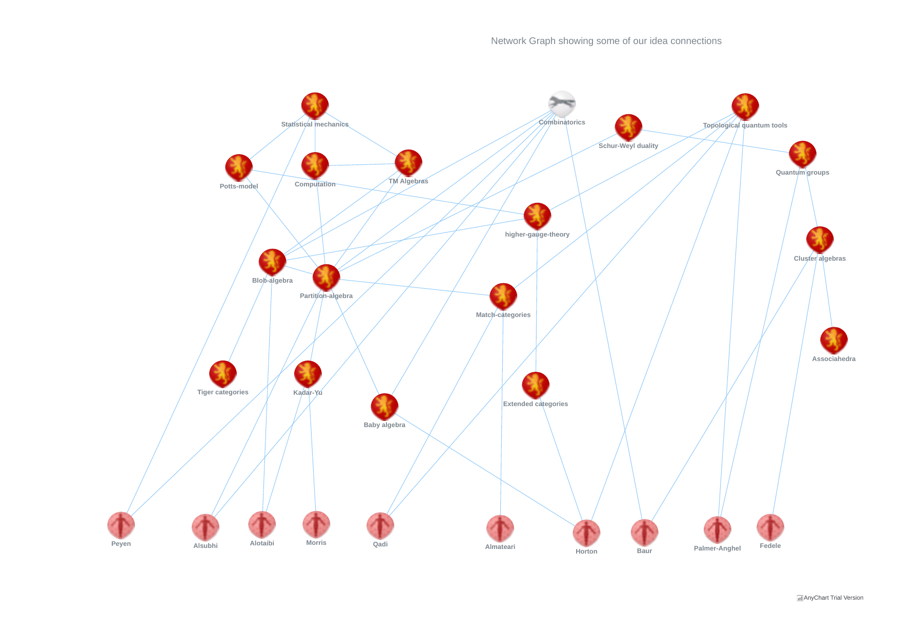

Paul Martin Home
Grad School Research: Idea mapper
Idea-mapper! (work in progress)
The idea is to drag the vertices around until a research idea comes into your head!...
-- contact me to add edges or vertices.
[here for augmented version]
[here for another!]
screenshot of mapper combed according to idea level:
